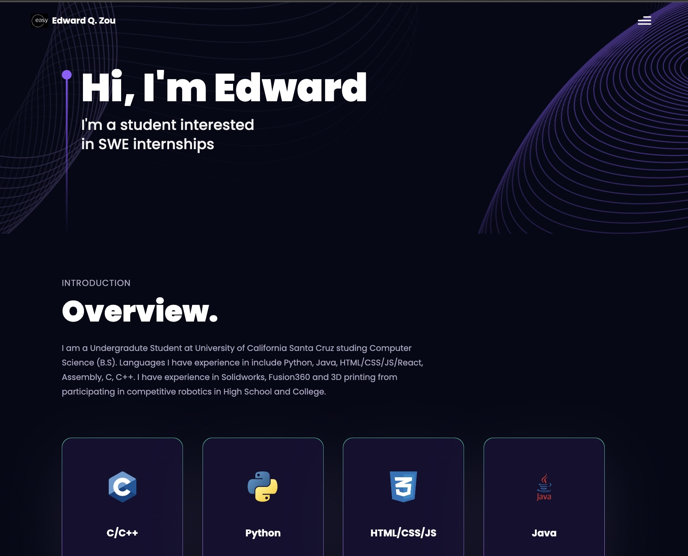

|
Edward Q. Zou I'm a Computer Science student at University of California Santa Cruz, where I'm pursuing my Bachelor of Science degree with a focus on systems programming and software development. I have experience in developing embedded systems, web applications, and system utilities. I'm particularly interested in low-level programming, computer architecture, and software engineering. |
{kind=link}
ProjectsHere are some of my recent projects in systems programming, web development, and software engineering. |
|
STS: Silicon Testing Software
2024 -- Present Developed STS, Silicon Testing System, on the STM32L476G board. The software initializes the CPU, GPIO and UART to provide an interactive command line driven user interface. A number of test apps are developed to display and modify memory, to turn on and off LEDs, to talk to I2C, and other peripherals. Implemented functions to initialize CPUs, setup GPIO, setup UART, setup I2C, setup NVIC interrupt controller, Enabled communication between IOexpander for communication with the joystick, LEDS, and other peripherals. |
|
|

|
My Portfolio Website 1.0
2023 -- 2024 Developed a personal portfolio to showcase projects and professional experiences. Implemented responsive design and interactive elements using HTML, CSS, and JavaScript. Deployed website and built email queries through the UI directly. |
|
|
My Portfolio Website 2.0
2024 -- Present Created an enhanced version of my portfolio website with improved design and functionality. Implemented modern UI elements including hover effects, responsive layouts, and interactive project showcases. Optimized image loading and implemented clean, semantic HTML structure. Enhanced user experience with smooth transitions, better visual hierarchy, and improved accessibility. Integrated direct links to project documentation and demonstrations, making it easier for visitors to explore my work. |

|
SysTools: System Utilities
2025 -- Present Developed a command-line memory manager, HTTP server, file management, and concurrent data structures. Implemented file I/O, socket communication, and multithreaded synchronization, mutexes, and condition variables. Optimized performance by preventing memory leaks, handling malformed inputs, and enforcing thread safety. Ensured correctness via stress testing, preventing crashes, data corruption, and deadlocks. |
|
HoyoVerse Simulation Tool
2024 -- Present GenshinCalculator is a simulation tool designed for users to optimize their characters. The tool uses intricate simulation logic and statistical calculations to accurately model and optimize in-game gear and weaponry. Pulled in-game data to perform analysis on the time frame of reaching the highest achievements in the game by using complex algorithms to simulate randomized gear drops. |
ExperienceHere are my professional experiences and leadership roles. |

|
Teacher's Assistant
University of California Santa Cruz Aug. 2021 -- Jun. 2022 Assisted in preparing labs, exams, homework, study material, and grading assignments for 153 students. Helped specific students with learning issues to understand concepts and improve their grades. Hosted office hours and private tutoring sessions. |
|
|
Teacher/Tutor
All Star Institute June 2018 -- Present Taught 100+ students through private and group tutoring in all areas of the sciences. Taught classes on Java, Python, as well as Geometry/Algebra 2 to competitive mathematics (AMC 8, 10, 12). Currently teaching math olympiad and python in person. |

|
President/Founder
UCSC Poker Club August 2023 -- 2024 Founded UCSC poker, organized tournaments and educational sessions with professional player mentors. Grew the club to 200+ members, held weekly meetings dedicated to studying probability and practicing games. |
EducationHere are my academic qualifications. |

|
Bachelor of Science in Computer Science
University of California Santa Cruz Aug. 2022 -- Present GPA: 3.9 (Dean's Honors List) Relevant Courses: Data Structures and Algorithms, Algorithm Analysis, Appl Discrete Math, Computer Architecture, Principles of Computer Systems Design, Comp Sys and C Prog, Com Sys and Assmbly Lan, Networking and the Internet, Vector Calculus, Linear Algebra, Probability, Machine Learning Basics |
SkillsHere are my technical skills and expertise. |
|
Languages: Python, Python Scripting, Java, HTML/CSS/JS/React, Assembly, C, C++, Git Tools: Linux, Oscilloscope, Matlab, Solidworks, Fusion360, Photoshop, Excel, PowerPoint, Word, Lightroom Other: Digital and Film (35mm) Photography, Final Cut, Adobe Premiere Pro |